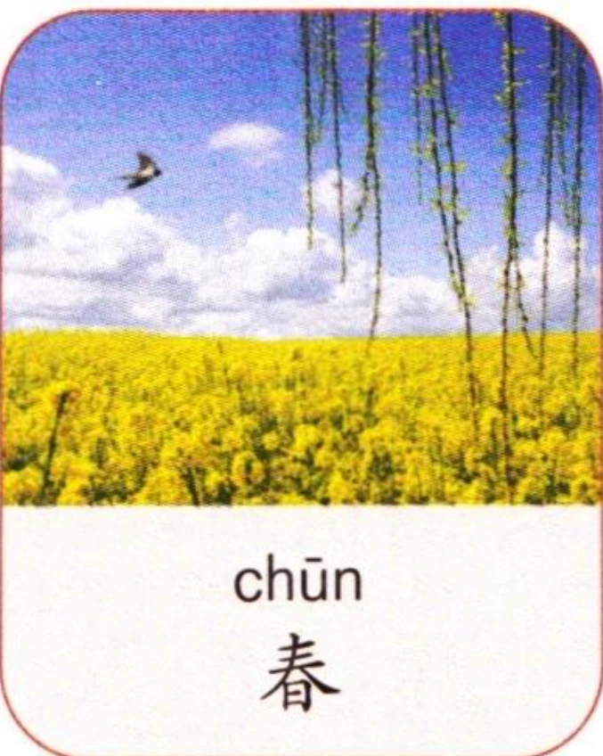
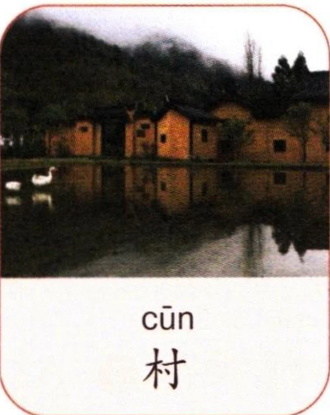
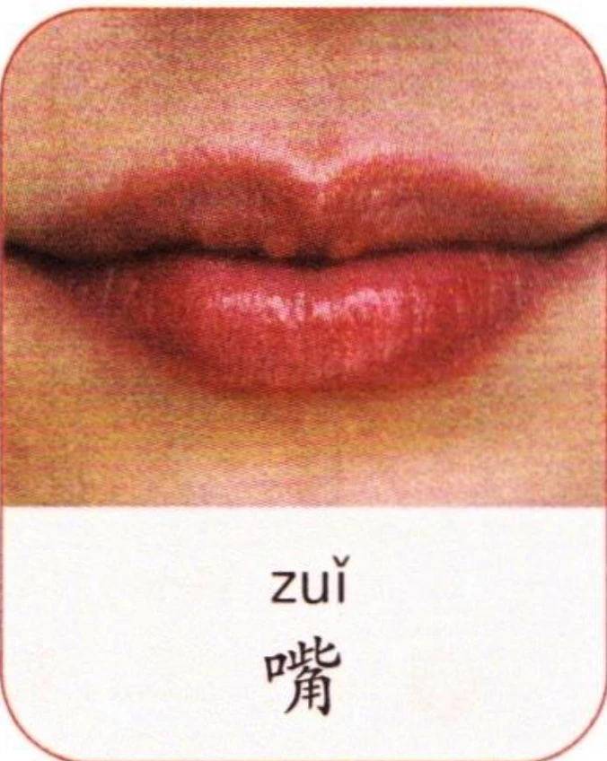

先跟读音节，再大声朗读。Listen and repeat the syllables, then read aloud.Прослушайте и повторите слоги, затем прочитайте вслух.
(2)韵母“uei、uen”在音节里的写法Writing the finals “uei” and “uen” in syllablesНаписание финалей «uei» и «uen» в слогах
韵母“uei、uen”和声母相拼时，写作“ui、un”。例如：“shuí、chūn、suì、cūn”。When the finals “uei” and “uen” combine with an initial, they are written as “ui” and “un”. For example: “shuí”, “chūn”, “suì”, and “cūn”.Когда финали «uei» и «uen» сочетаются с инициалью, они пишутся как «ui» и «un». Например: «shuí», «chūn», «suì» и «cūn».
看图片，先跟读音节，再大声朗读。Look at the pictures, listen and repeat the syllables, then read aloud.Посмотрите на картинки, прослушайте и повторите слоги, затем прочитайте вслух.



1听录音，写出听到的声母并大声朗读。Listen, write down the initials you hear, then read aloud.Прослушайте, запишите инициали, которые вы слышите, затем прочитайте вслух.
2听录音，写出听到的韵母并大声朗读。Listen, write down the finals you hear, then read aloud.Прослушайте, запишите финали, которые вы слышите, затем прочитайте вслух.